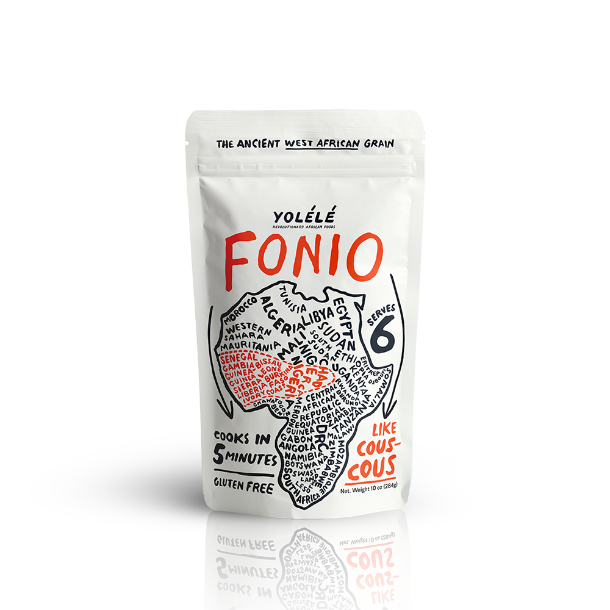
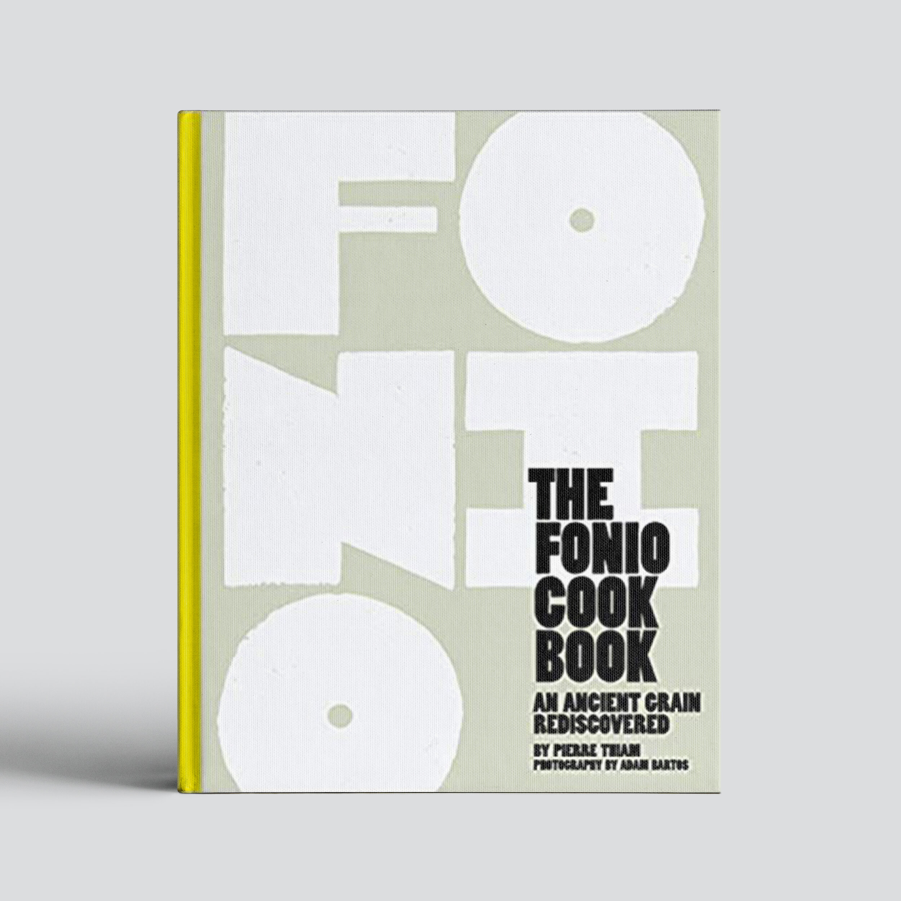
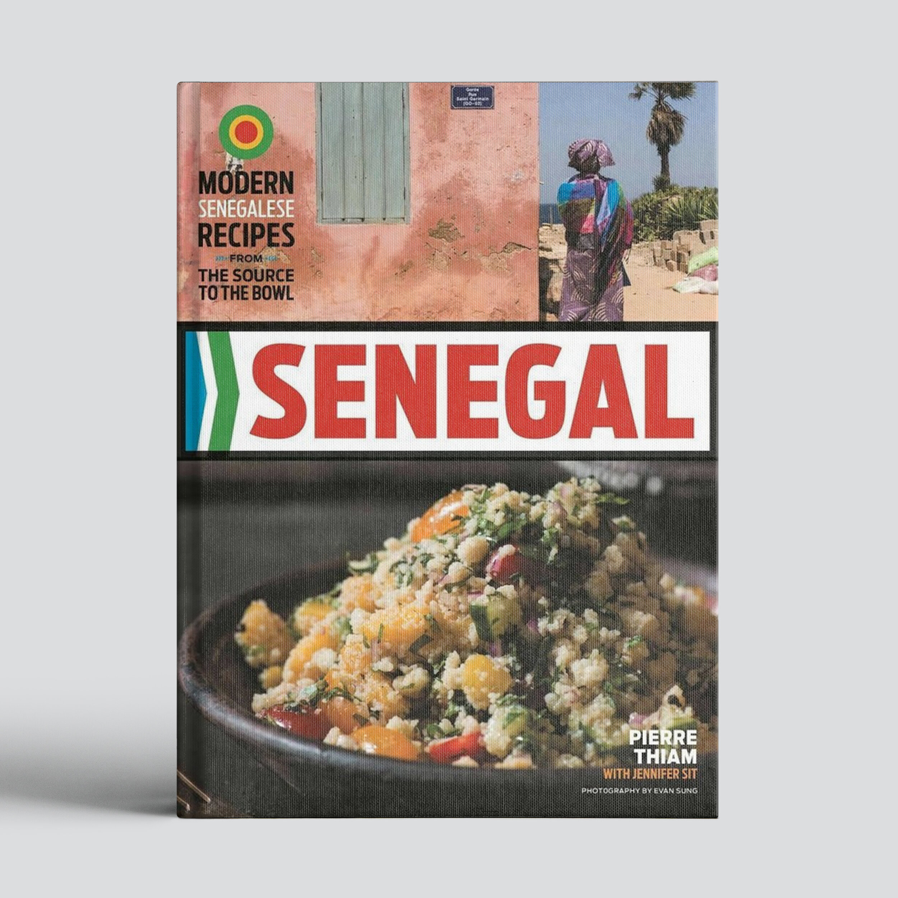
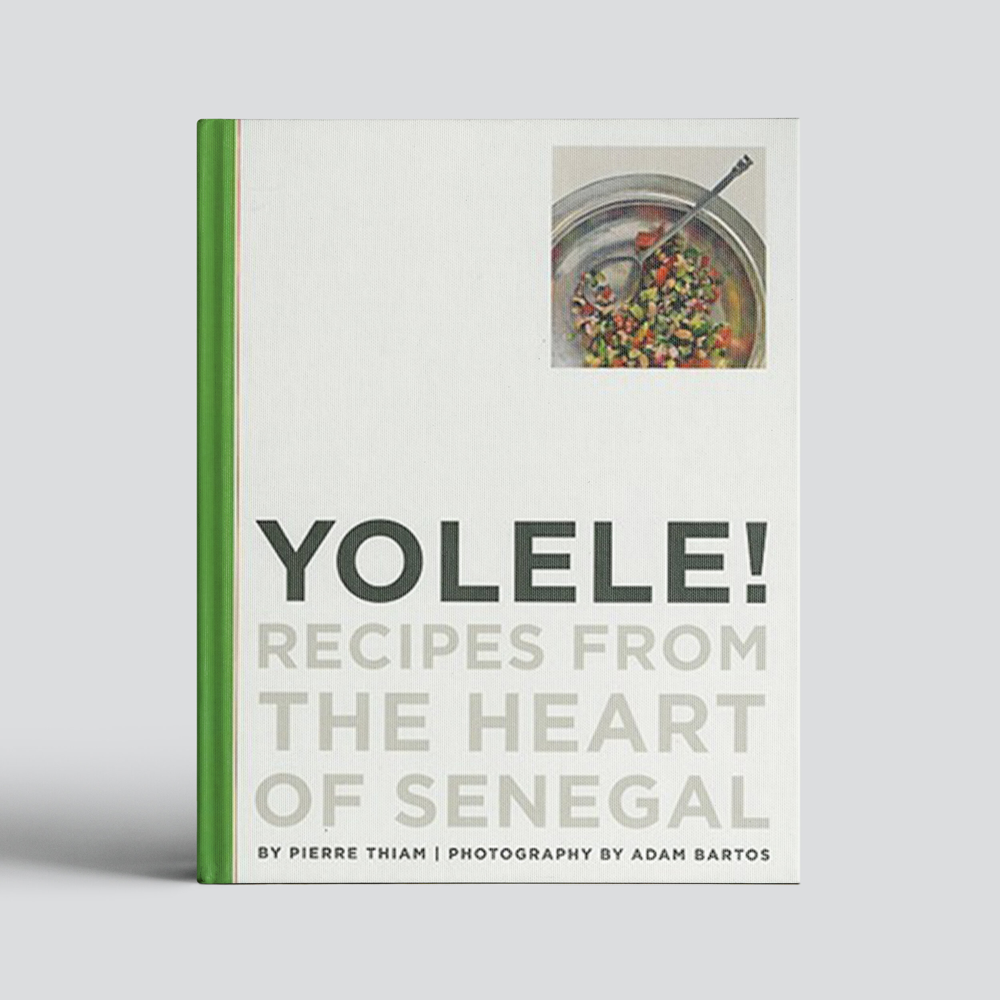
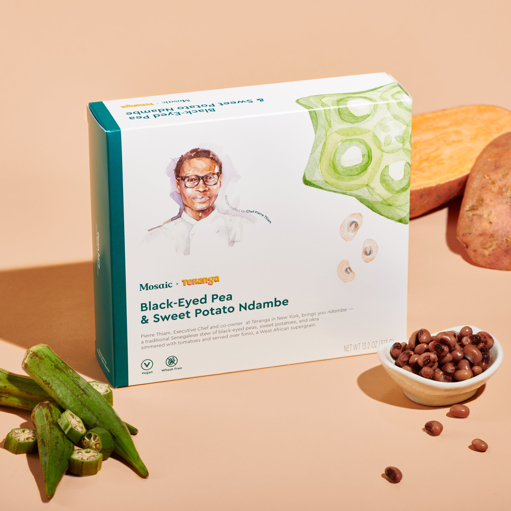

Shop Pierre’s products
“Pierre Thiam’s magical and moving Senegal gives voice to a culture that many in the west have little
concept of. [He] stands as a testament to the beauty and richness that awaits any curious eater on the
west coast of Africa.”

YOLÉLÉ FONIO
Founded by Pierre Thiam, Yolélé Foods is introducing West Africa's oldest
grain, fonio, to the world. It's gluten-free, has triple the protein, iron, and fiber of
brown rice—and cooks in just 5 minutes!

THE FONIO COOKBOOK: AN ANCIENT GRAIN REDISCOVERED
In this landmark cookbook, chef Pierre Thiam, a native of Senegal, celebrates fonio, an
ancient "miracle grain" of his childhood that he believes could change the world.

SENEGAL: FROM THE SOURCE TO THE BOWL
Inspired by the depth of Senegalese cooking and the many people he’s met on his culinary
journey, these recipes are Pierre Thiam’s own creative, modern takes on traditional
Senegalese cuisine.

YOLELE! RECIPES FROM SENEGAL
Pierre’s first book, Yolele!, introduced Senegalese food to the world and celebrates the art
of creating family meals using organic, local produce, and farm-fresh meats and seafood.

BLACK-EYED PEA & SWEET POTATO NDAMBE
Together, Pierre and Mosaic’s head chef Christine pulled off the impressive feat of
developing this bowl 100 percent virtually — a result of careful collaboration, coordinated
grocery lists, and plenty of Zoom cooking sessions. From our tiny test kitchens to your
table, we sincerely hope you enjoy it.